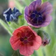

Plant Grimoire
 Deerstongue
Deerstongue
Magickal Properties
Gender: Feminine (Cold)
Element: Earth / Air
Powers: Love, Eloquence, Persuasion, Favorable Speech, Legal Victory
Description
Deerstongue (Carphephorus odoratissimus) is a perennial herb native to the southeastern United States. Its long, smooth leaves release a sweet vanilla fragrance when dried, due to the presence of coumarin. Despite the evocative name, this is entirely botanical in origin.
Magickal Uses
Deerstongue is one of the classic Hoodoo court case botanicals, carried to grant eloquence to both the bearer and their attorney and to facilitate clear, persuasive speech during legal proceedings.
- Eloquence: Carry dried leaves in a charm bag to promote fluent, persuasive speech.
- Legal success: Include in court case mojos, sachets, and botanical candles for favorable legal outcomes.
- Silencing opponents: In some workings, used to ensure one's own side speaks clearly while opponents lose their footing.
- Against slander: Sprinkle powdered deer's tongue on the bottom of your shoes and no one can speak against you.
- Potpourri and tobacco: The leaves are used in potpourris for their vanilla fragrance. In small amounts they are also used to flavor tobacco.
In Court Case Magick
Alongside black poppy seeds, calendula, and slippery elm, Deerstongue is one of the four core botanicals of Hoodoo court case spellwork. Carry any combination in a charm bag during legal proceedings for enhanced effect.
Notes
The sweet vanilla scent makes Deerstongue pleasant to carry and easy to incorporate into sachets and charm bags. Dried and powdered, it can also be rolled into dressed candles as part of botanical candle workings.
Botanical Description
A herbaceous perennial of the Asteraceae (Compositae) family, distinguished by a naked receptacle and feathery pappus. The leaves are large, fleshy, dark green, and clasped at the base. Fresh leaves carry little odour, but on drying they develop a vanilla-like fragrance, largely from coumarin crystals visible on the upper leaf surfaces.
Origin & Distribution
Native to the eastern United States and gathered on the savannah land between North Carolina and Florida.
Folk Medicine
The roots have been used for their diuretic action and applied locally for sore throats and gonorrhoea. The plant has also been used as a tonic in the treatment of malaria. In folklore, it is associated with contraception and sterility in women.
Related Species
Several deertongue species are native to America, including blazing star or prairie pine (Liatris squarrosa) and gayfeather (L. spicata). Deerstongue should not be confused with the common  Vanilla (Vanilla planifolia) or with the European
Vanilla (Vanilla planifolia) or with the European  Deertongue Absolute.
Deertongue Absolute.